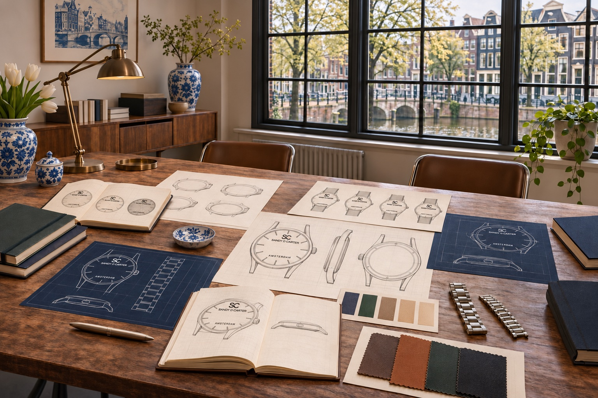

The journal
IDEAS BEHIND
THE OBJECTS.
Original perspectives on watch design, architecture, proportion and enduring form.
TIME REFINED
The SANDY D. CARTER Journal explores the ideas that shape contemporary watch design. Each story is educational and editorial; none introduces an unannounced product.
Brand story
The Story Behind SANDY D. CARTER
A design journey that began in Amsterdam in 2011.
AmsterdamAmsterdam and the Art of Minimalist Design
Architecture, utility and creative perspective.
Design principlesWhy Minimalism Matters in Watch Design
Clarity as the result of disciplined decisions.
Design historyPurposeful Simplicity in European Design
Function, proportion and the value of restraint.
Dial architectureUnderstanding Watch Dial Architecture
Information, negative space and visual hierarchy.
Buying guideHow to Choose a Premium Designer Watch
A practical framework built on verified facts.
ProportionThe Importance of Proportion in Watch Design
How case, dial and space work together.
Watch educationUnderstanding Watch Movements
Quartz, hand-wound and automatic mechanisms.
Design perspectiveTimeless Design Versus Temporary Trends
Why coherence outlasts novelty.
WatchmakingThe Art of Watchmaking
How dial, case, movement and wearing experience connect.
